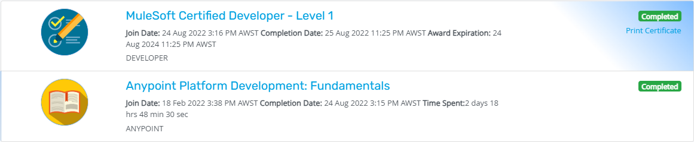

As a MuleSoft Certified Developer, I bring extensive experience to the table, showcasing proficiency in autonomously contributing to Mule 3 & 4 projects. My expertise extends beyond project execution, as I also offer guidance and mentorship to junior team members. I possess comprehensive knowledge and expertise in designing, constructing, testing, debugging, deploying, and managing APIs and integrations.
With a proven track record of successful project contributions and a deep understanding of MuleSoft's capabilities, I am well-equipped to take on complex challenges and deliver impactful results. Key competencies include:
Oscar Wilde
- Experience is the name everyone gives to their mistakes.



Oct 2021 - Present
June 2017 - Nov 2017
A sports-related system that will store athlete information, results, and status with a borrowed equipment tracking and monitoring in Tarlac State University located at Tarlac City.
May 2018 - Sept 2018
Technical related jobs that includes Hardware and Software troubleshooting .
January 2021 - June 2021
Taking a Degree of Master's in Information Technology in Tarlac State University College of Computer Studies located in Tarlac City, Tarlac.
July 2014 - June 2018
Obtained a diploma in information technology with the main of networking, web development, and database security.